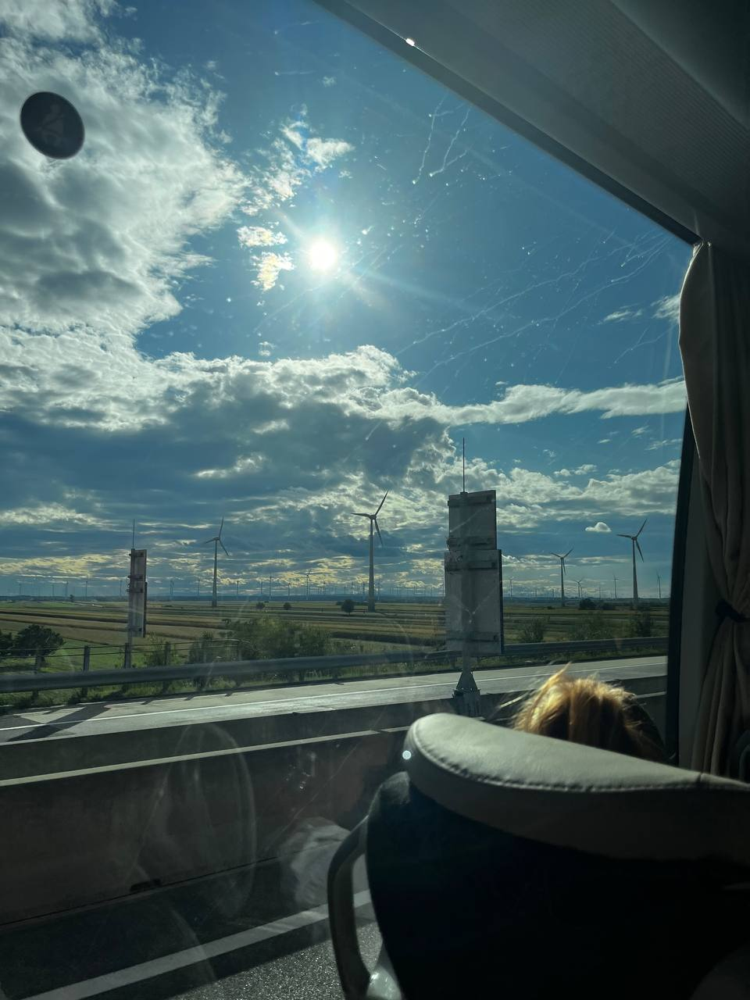

Козачук Анна Юріївна
email: anna11.kozachyk@gmail.com
Луцький ліцей № 4 імені Модеста Левицького — комунальний заклад загальної середньої освіти в місті Луцьку , який до 2022 року мав статус гімназії. Заклад носить ім’я відомого громадського діяча та лікаря Модеста Левицького з 2010 року. У ліцеї навчаються учні початкової, середньої та старшої школи, вони активно беруть участь в олімпіадах, військово-патріотичних вишколах та освітніх проєктах.
Я дуже люблю читати, адже книги допомагають відпочити, дізнатися нове та неначе подорожувати уявою в інші світи. Вони розширюють мій кругозір і дають змогу побачити життя з різних сторін. Подорожі для мене — це справжня можливість отримати нові враження. Я люблю відкривати цікаві місця, знайомитися з людьми, дізнаватися про традиції та культуру інших міст і країн. Музика ж завжди поруч у моєму житті. Вона створює настрій, допомагає зосередитися під час навчання чи розслабитися після напруженого дня.
Мої улюблені книги дуже різні, але кожна з них залишила свій слід у моїй уяві. «Коефіцієнт поцілунку» Хелен Голан — романтичний роман, який захоплює цікавим сюжетом і змушує переживати за героїв. «Чарлі і шоколадна фабрика» Роальда Дала — справжня казкова пригода, яка переносить мене у фантастичний світ солодощів і неймовірних винаходів, де добро завжди перемагає. Детективи теж займають особливе місце серед моїх уподобань. «Вбивство в Східному експресі» та «Забуте вбивство» Агати Крісті тримають у напрузі від першої до останньої сторінки, змушуючи розгадувати таємниці разом із слідчими. Кожна з цих книг надихає мене читати більше та відкривати нові історії.
"Не шукай сенсу життя. Створи його сам."
– Жан-Поль Сартр
"Єдиний спосіб знайти щастя – це перестати шукати його зовні."
– Далай-лама
"Друзі – це родина, яку ми обираємо самі."
– Ед Мюр
"Кожен кінець – це новий початок."
– Сенека
Мої улюблені фільми дуже різні, але кожен по-своєму захоплює мене. «Той, що біжить лабіринтом» — напружений трилер про виживання, а «Гаррі Поттер» переносить у чарівний світ магії та дружби. Також мені подобаються «Пірати Карибського моря» з веселими пригодами і скарбами та «Будка поцілунків» — романтична історія, що змушує посміхатися.